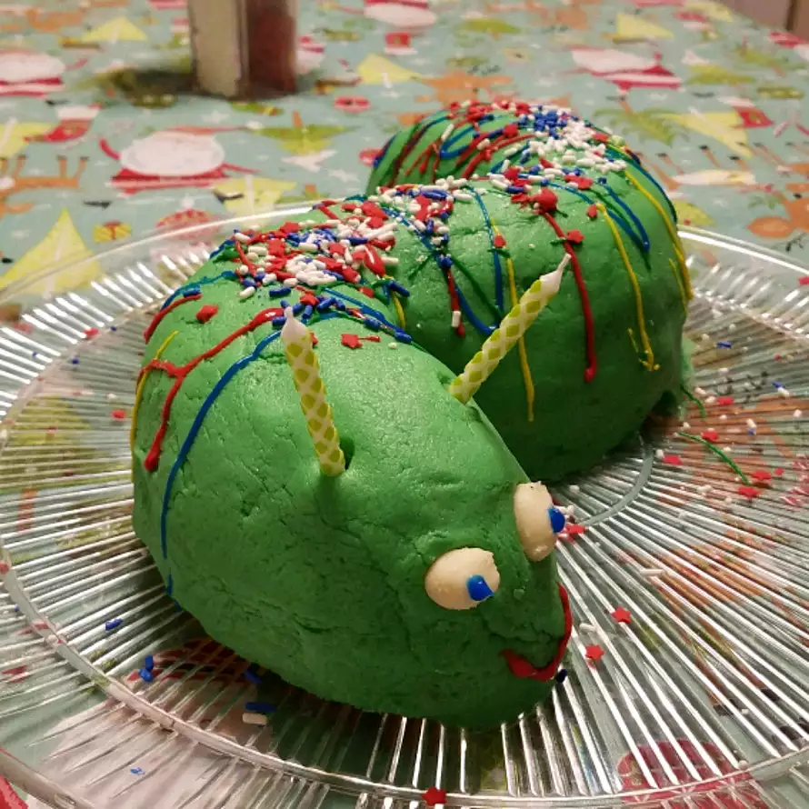

Cake

This is a great cake to do
after a unit on bugs, wildlife, etc.
Have the kids help decorate it!
Use licorice whips for antennas, or gumdrops.
Spread icing around caterpillar and sprinkle green tinted coconut for grass.
Use any flavor cake mix or any Bundt cake recipe.
Ingredients
- 1 (18.25 ounce) package yellow cake mix
- 1 (16 ounce) package vanilla or colored frosting
- ½ cup flaked coconut
Steps
- Prepare cake according to package instructions and bake in a Bundt pan. Cool and invert onto cutting board.
- Cut a piece of cardboard large enough to accommodate two Bundt pans. Cover with aluminum foil.
- Carefully cut the cake in half and place on cardboard in an "S" shape.
- Decorate with colored icing, candies, etc.